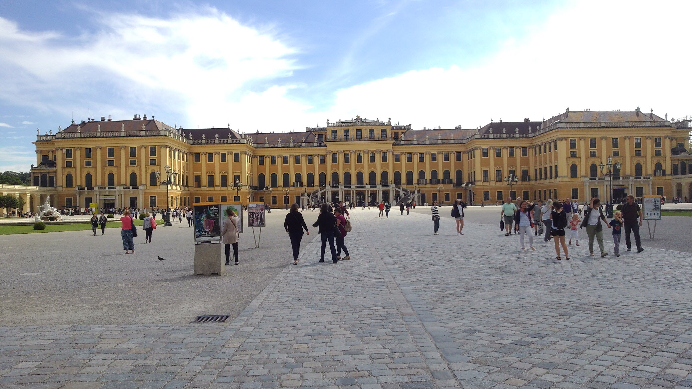

超值行程－奧地利真善美湖區

超值行程－奧地利熊布朗宮

約翰‧瑟巴斯倩‧巴哈的作品豐富，詠嘆調、e 小調三重奏、小提琴協奏曲、無伴奏大提琴奏鳴曲、馬太受難曲、布蘭登堡協奏曲、十二平均律鋼琴曲集、郭德堡變奏曲等，截至目前， 這些樂曲仍是演奏家的最愛。
路德維希‧范‧貝多芬是一位稟賦優異的音樂家，創作了克羅采小提琴奏鳴曲、第三號交響曲「英雄」、「熱情奏鳴曲」、歌劇「費德里奧」、小提琴協奏曲、第五號交響曲「命運」、 第六號交響曲「田園」等不朽名作。
蕭邦的音樂纖細、熱情並蒙上一抹淡淡的哀愁，他的作品除了十七首波蘭歌曲、鋼琴三重奏和大提琴曲以外，全部是鋼琴曲，包括五十六首馬祖卡舞曲、十五首波蘭舞曲、 兩首鋼琴協奏曲、三首鋼琴奏鳴曲、二十七首練習曲、二十五首前奏曲、十五首圓舞曲、四首詼諧曲、四首即興曲、四首敘事曲等。
約翰‧瑟巴斯倩‧巴哈的作品豐富，詠嘆調、e 小調三重奏、小提琴協奏曲、無伴奏大提琴奏鳴曲、馬太受難曲、布蘭登堡協奏曲、十二平均律鋼琴曲集、 郭德堡變奏曲等，截至目前，這些樂曲仍是演奏家的最愛。
路德維希‧范‧貝多芬是一位稟賦優異的音樂家，創作了克羅采小提琴奏鳴曲、第三號交響曲「英雄」、「熱情奏鳴曲」、歌劇「費德里奧」、小提琴協奏曲、 第五號交響曲「命運」、第六號交響曲「田園」等不朽名作。
蕭邦的音樂纖細、熱情並蒙上一抹淡淡的哀愁，他的作品除了十七首波蘭歌曲、鋼琴三重奏和大提琴曲以外，全部是鋼琴曲，包括五十六首馬祖卡舞曲、 十五首波蘭舞曲、兩首鋼琴協奏曲、三首鋼琴奏鳴曲、二十七首練習曲、二十五首前奏曲、十五首圓舞曲、四首詼諧曲、四首即興曲、四首敘事曲等。